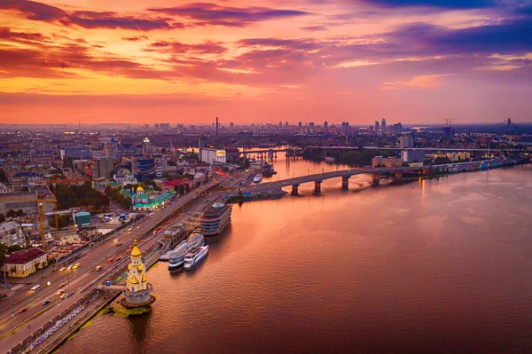

Місце народження: 26 серпня 2005р. м.Лохвиця
Освіта: Лохвицька гімназія №1 м.Лохвиця;
НТУУ "КПІ", м. Київ
Хоббі:
Улюблені фільми:
Ки́їв — столиця та найбільше місто України. Розташований у середній течії Дніпра, у північній Наддніпрянщині. Політичний, соціально-економічний, транспортний, освітньо-науковий, історичний, культурний та духовний центр України. У системі адміністративно-територіального устрою України Київ має спеціальний статус, визначений Конституцією, і не входить до складу жодної області, хоча і є адміністративним центром Київської області. Місце розташування центральних органів влади України, іноземних місій, штаб-квартир більшості підприємств і громадських об'єднань, що працюють в Україні.
За «Повістю временних літ», Київ заснував полянський князь Кий зі своїми братами Щеком і Хоривом та сестрою Либіддю. Згідно з археологічними даними та писемними джерелами, початок безперервного розвитку Києва датується 2-ю половиною V ст. — 1-ю половиною VI ст.; осередком розширення Києва була гора Замкова. Протягом своєї історії місто було столицею полян, Русі і України, а також адміністративним центром однойменних князівства, землі, воєводства, повіта, полку, намісництва, губернії, округи, района, генеральної округи, і зокрема православної митрополії, генерал-губернаторства і військової округи. Один із найстаріших історичних центрів Східної Європи та християнства — Софійський собор та Києво-Печерська лавра — внесені до списку Світової спадщини ЮНЕСКО.
